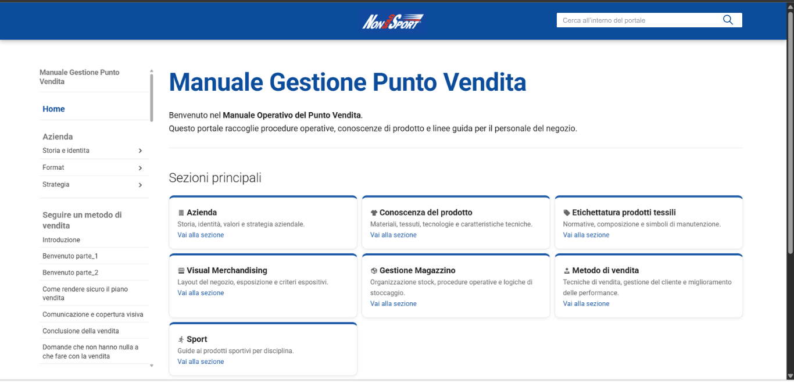

Digitalizzazione del manuale operativo di Non Solo Sport in un portale web interno costruito con MkDocs: 274 pagine su tecniche di vendita, product knowledge (9 brand di calzature, 8 discipline sportive, materiali tessili) e visual merchandising, navigabili tramite sidebar gerarchica, card ad accesso rapido e ricerca full-text in italiano.
Il manuale operativo di Non Solo Sport esisteva in forma frammentata: procedure di vendita, schede tecniche di prodotto, linee guida di visual merchandising e istruzioni di magazzino erano distribuiti tra documenti Word, PDF e fogli cartacei — inaccessibili al personale durante il lavoro quotidiano in negozio.
L'obiettivo era centralizzare tutto in un portale web interno consultabile da qualsiasi dispositivo, aggiornabile senza competenze tecniche e strutturato attorno ai reali flussi di lavoro del personale — non alla logica organizzativa dell'archivio originale.
Il lavoro è partito dalla mappatura dei contenuti esistenti e dalla definizione di una struttura che rispecchiasse i reali bisogni del personale — non la logica dei documenti originali. Il risultato sono 8 sezioni principali, ciascuna con profondità e granularità calibrate sul volume e sulla frequenza d'uso delle informazioni.
Il portale è costruito su MkDocs Material come base, con un tema completamente personalizzato per rispecchiare l'identità visiva di Non Solo Sport e ottimizzato per la consultazione da dispositivi mobili in reparto.
Il file di configurazione MkDocs definisce il tema Material come base, abilita la navigazione a tab e sezioni espandibili, il pulsante "torna in cima" e il suggerimento automatico nella barra di ricerca. Il plugin Search è configurato esplicitamente in italiano per gestire correttamente la morfologia della lingua, mentre il plugin Minify comprime l'HTML in output per ridurre i tempi di caricamento.
Il tema è stato sovrascritto in più punti per adattarlo all'identità visiva aziendale. La palette colori è stata impostata sul blu istituzionale del brand. L'header è stato ridisegnato con CSS Grid per centrare il logo e allineare la barra di ricerca a destra, eliminando il titolo testuale del sito. Nella sidebar, il comportamento di default di MkDocs che tronca le voci lunghe con puntini di sospensione è stato rimosso — i titoli delle procedure operative sono spesso lunghi e devono essere leggibili per intero. Le card della homepage hanno ricevuto un bordo superiore colorato e un effetto hover con sollevamento. Il pannello laterale destro con l'indice della pagina è stato nascosto per lasciare più spazio al contenuto, e la larghezza massima della griglia è stata portata a 1400px per sfruttare monitor da scrivania e tablet in orizzontale.

Il portale è progettato per tre profili d'uso distinti: chi esplora la struttura, chi vuole raggiungere rapidamente una sezione frequente, e chi cerca qualcosa di specifico senza sapere dove trovarlo.
Procedure di vendita, schede tecniche di 9 brand di calzature, guide per 8 discipline sportive, manuale visual e normative tessili — tutto accessibile da un unico punto, da qualsiasi dispositivo in negozio.
Il venditore può consultare in tempo reale la tecnologia Air Unit di Nike, il Wave System di Mizuno o i tipi di appoggio plantare o i tipi di appoggio plantare durante una conversazione con il cliente — senza cercare tra fogli cartacei.
59 pagine traducono le tecniche di vendita in una guida consultabile per singolo argomento: dall'accoglienza del cliente alla gestione dell'obiezione di prezzo, fino al gioco di squadra tra colleghi.
Ogni modifica al manuale corrisponde a editare un file Markdown e rieseguire il build. Nessun CMS, nessun database — chiunque sappia aprire un file di testo può aggiornare il contenuto.
Il sito statico è deployabile su qualsiasi file server o intranet aziendale senza backend, database o configurazioni complesse. La ricerca full-text gira interamente lato client con Lunr.js.
Header con logo centrato tramite CSS Grid, palette aziendale personalizzata, sidebar con separatori tra sezioni, cards con top-border brand e max-width a 1400px per sfruttare monitor da scrivania e tablet orizzontale.
Il progetto dimostra come una scelta tecnologica deliberatamente semplice — sito statico, Markdown, build automatico — possa risolvere un problema operativo reale in modo più efficace di soluzioni più complesse. La chiave non è la tecnologia scelta, ma la cura nell'architettura dei contenuti: strutturare 274 pagine in modo che il personale trovi quello che cerca in pochi secondi, sia durante un riassortimento in magazzino, sia spiegando a un cliente la differenza tra le tecnologie proprietarie dei brand (Boost, Gel, Wave…).